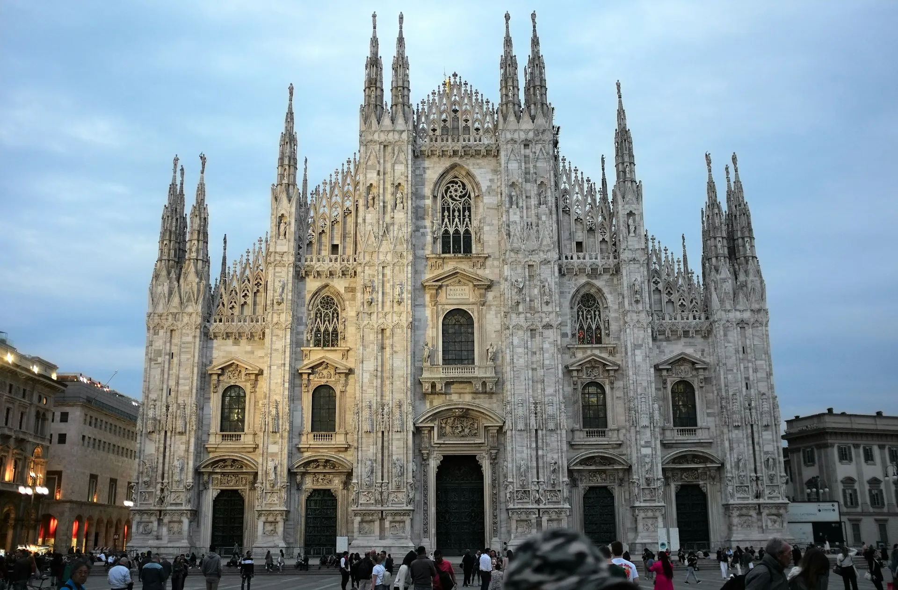
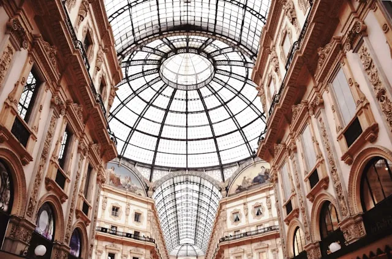
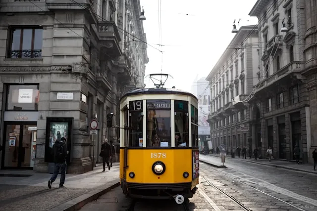
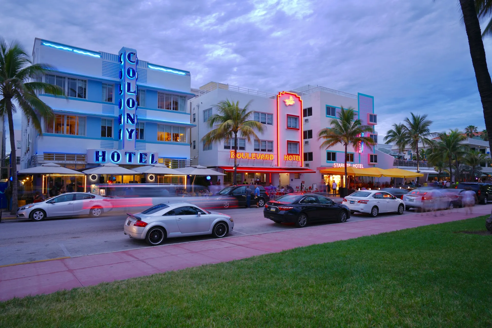
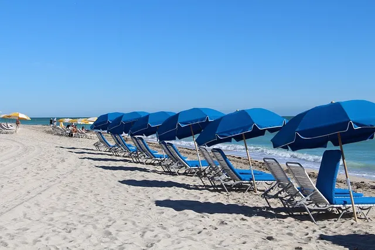
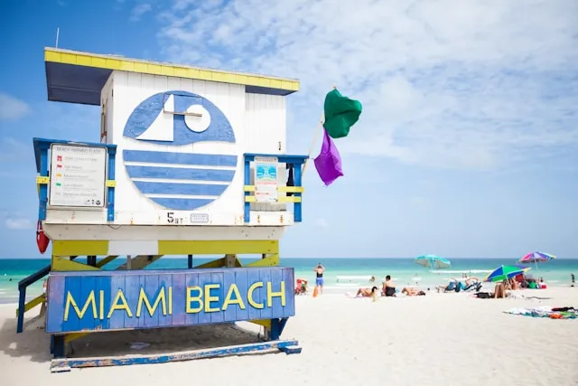
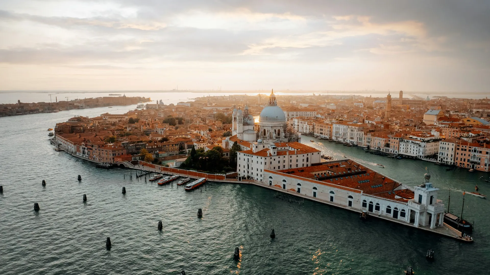
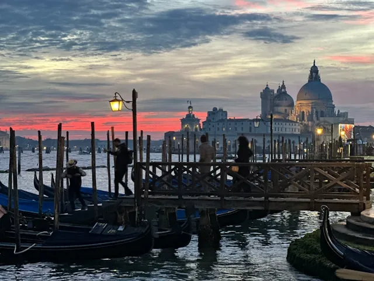
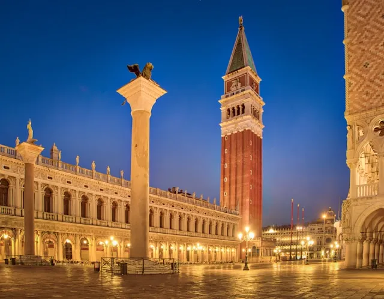

心を満たす、美しい記憶を綴る旅へ。
ページをめくるたび、目の前に広がる新しい世界。「旅する3つの街物語」へようこそ。洗練されたミラノ、きらめくマイアミ、神秘的なベネチア。それぞれの街が紡ぐ独自のカルチャーと情景が、あなたの感性を揺さぶり、まだ見ぬ旅情へといざないます。

ミラノイタリア屈指の大都市ミラノ。最先端のファッションとデザインが息づく街でありながら、壮大にそびえ立つドゥオーモなど歴史的建造物も共存します。洗練された都会の活気と芸術の薫りが人々を魅了し続けます。



マイアミ米フロリダ州に位置する、輝く太陽と青い海に彩られた常夏の楽園。果てしなく続く美しい白浜のビーチや、パステルカラーのアールデコ歴史地区が象徴的です。陽気なラテンカルチャーと活気ある夜が交差します。



ベネチア街中に網の目のように運河が巡る、世界でも類を見ない美しき水の都。車が存在しない静寂な空間の中、歴史あるゴンドラが水面を優雅に行き交います。迷宮のような路地とロマンチックな街並みが魅力の都市です。

